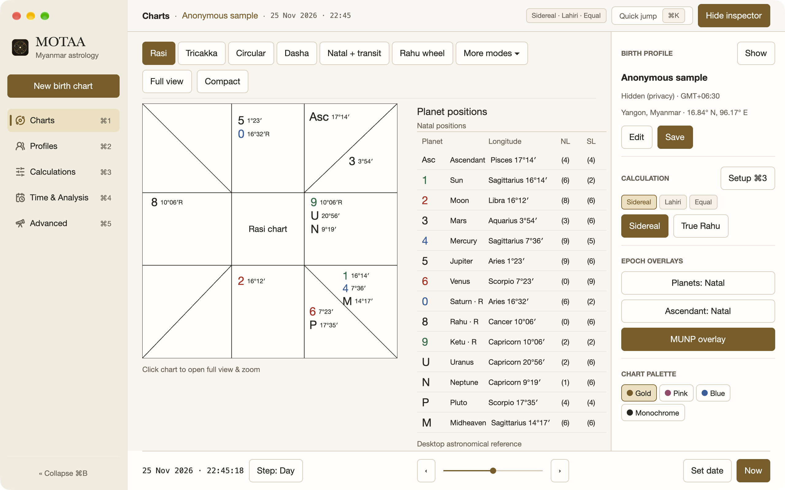

Burmese astrology, set on native paper.
MOTAA Desktop is an offline-first Myanmar astrology workspace built in Rust and GPUI. Cast natal and transit charts, preserve traditional Burmese square and circular chart geometry, and manage local SQLite birth profiles with zero accounts or telemetry.
brew install --cask AungMyoKyaw/homebrew-tap/motaa-desktop

Traditional square Burmese chart geometry with active birth profile context, planetary longitudes, and 4 chart-only color palettes.
Twelve chart modes and sixteen analytical tools, all local.
Every workflow from traditional Burmese square diagrams to KP subdivisions and ephemeris calendars runs directly on your machine with full keyboard navigation.
Chart Modes
12 views · ⌘1- RasiTraditional Burmese square chart with house and planet notation
- TricakkaThree-wheel relational chart geometry
- Traditional AspectsClassical aspect table and sign relationships
- Nakshatra TraversalLunar mansion transit progression
- LatLonPlanetary longitudes, latitudes, and coordinate breakdown
- Western AspectsOrb-based geometric aspect matrix
- Natal + TransitSide-by-side natal baseline and live transit comparison
- Dasha PeriodsMajor and sub-period planetary timelines
- Circular Chart27-nakshatra circular detail view with syllable ring
- Rahu Wheel27 and 28 division Rahu wheel geometry
- Rasi StrengthsSign and planetary strength ledger
- Rasi AspectsSign-level mutual aspect analysis
Advanced Tools
16 modules · ⌘5- Strength TimelineTrack planetary strength shifts over time
- AshtakavargaBindu totals and house-by-house scoring
- KP SubdivisionsKrishnamurti Paddhati star and sub-lord tables
- Heliocentric ModelSun-centered planetary positions
- Divisional ChartsHarmonic and varga chart projections
- Electional TimingEvaluate favorable windows for planned events
- Ephemeris CalendarDaily astronomical positions offline
- EclipsesSolar and lunar eclipse lookup
- Daily TatkalikaTemporary daily planetary relationships
- Satapati Name WheelTraditional Burmese naming reference wheel
- SarvatobhadraChakra grid for transit vedha analysis
- Yoga & CandidatesRule-based yoga detection and candidate times
- InterpretationsStructured reading reference alongside charts
- Transit EventsIngress and exact transit event scanner
- Ten Pillars / Ayu MoonLongevity and lunar pillar calculations
- Nakshatra GroupsGrouped lunar mansion classification
Built for offline astrological work.
Designed around fast native rendering, transparent calculation settings, and durable local data ownership.
534-Town Offline Directory
Look up Myanmar towns, coordinates, and historical IANA timezone offsets completely offline via embedded
tzf-rs and chrono-tz. Network calls occur only when you explicitly open
Search OpenStreetMap or Pick on map.
Local SQLite & Android Import
Birth profiles, calculation overrides, and backups live in a local SQLite database on your machine. Export or restore JSON backups anytime, or bring existing records directly from Android MOTAA v31.1.
Full Calculation Control
Switch between Tropical and Sidereal zodiacs, select from 9 ayanamshas and 8 house systems,
scrub transit time forward or backward with live controls, and jump anywhere with ⌘K.
Native Rust & GPUI
Compiled to a single native executable with Metal on macOS, DirectX on Windows, and Vulkan on Linux. No browser runtime, no account wall, and no analytics or crash telemetry.
Install MOTAA Desktop v0.2.0
Install on macOS through Homebrew for automatic quarantine removal and clean upgrades, or download verified release archives for macOS, Windows, and Linux.
Homebrew (Recommended)
Installs MOTAA Desktop.app for Apple Silicon or Intel, verifies the release SHA-256 checksum,
and clears the macOS quarantine attribute automatically during postflight.
brew install --cask AungMyoKyaw/homebrew-tap/motaa-desktop
Upgrade later with brew upgrade --cask AungMyoKyaw/homebrew-tap/motaa-desktop.
Also listed on AungMyoKyaw/homebrew-tap.
Windows x64
Extract the portable ZIP and run motaa-desktop.exe, or install via the MSIX package.
Local profiles are stored in %LOCALAPPDATA%\MOTAA Desktop.
Linux (Ubuntu 24.04 x64)
Extract the archive and run ./motaa-desktop inside a graphical session with Vulkan support.
Local data is stored at $XDG_DATA_HOME/motaa-desktop or ~/.local/share/motaa-desktop.
Direct Download
Verify v0.2.0 SHA-256 Checksums
3d6e66aac412f4d4b8e61780b61dd217d8e90553f00c2dbfd68cd8252452b870 motaa-desktop-v0.2.0-macos-arm64.zip 81d60bdaf6c725efa5a3256e40a90727ca1bb7e44327f8f98810f52f9bcac150 motaa-desktop-v0.2.0-macos-x64.zip 9434c10c971d588457765ca9ede309fd4570d37bdb69b88cc7ac5bf2fdc9dfe6 motaa-desktop-v0.2.0-windows-x64.zip 8c429da8f8c7c631980e578df3fe6354d46aff450fde118a2ea4f104a071a605 motaa-desktop-v0.2.0-windows-x64.msix eeba48a86d2161e7c3214bb5e9fef02394b1238e09f61f01e2ce0f6cace384b2 motaa-desktop-v0.2.0-linux-x64.tar.gz